Condensed matter theory · Ultracold atoms
Ke Wang
Exploring correlated
quantum matter.
Eberly Senior Postdoctoral Fellow
University of Rochester

01 / RESEARCH
Many particles.
New possibilities.
I am Ke Wang, a theoretical physicist studying the correlated phases of quantum matter. My research area is condensed matter physics and ultracold atoms. Both systems exhibit intriguing few- and many-body physics. My research work is dedicated to discovering new physics and exploring mechanisms in these systems.
02 / PUBLICATIONS
Recent work
All publications- 2026
Moved from Chicago to Rochester.
- 2026
Presented a talk at the Gordon Research Conference on Correlated Electron Systems.
- 2026
Gave a Leinweber Seminar on superconductivity in twisted bilayer graphene on May 20.
- 2026
Presented two talks at the March Meeting in Denver.